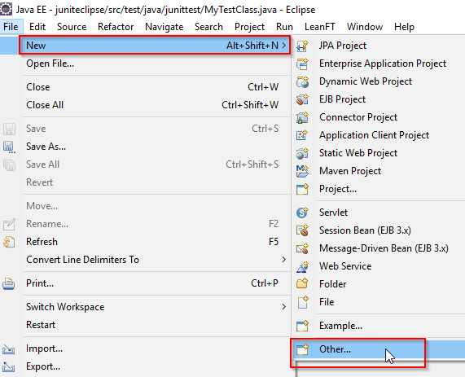
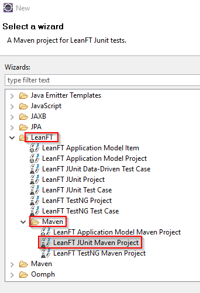
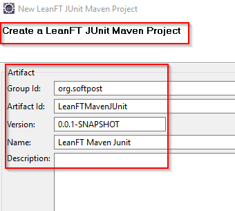
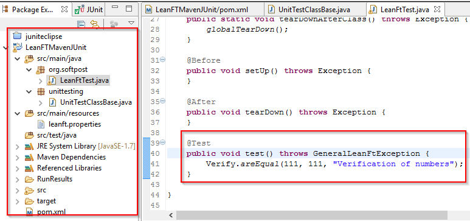
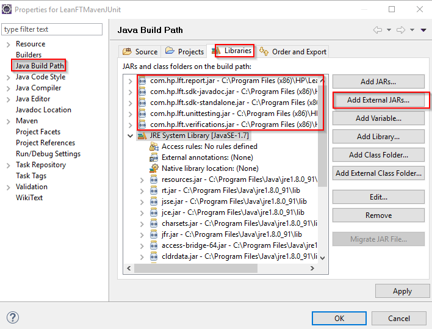

LeanFT
Introduction
HPE Lean Functional Testing (LeanFT) is a powerful and lightweight functional testing solution built specifically for continuous integration and continuous testing.
Key points to note about LeanFT are given below:
- It’s a licensed tool.
- Developed by HP in 2015.
- It’s light version of UFT (QTP).
- With LeanFT, you can write tests in .Net language as well as Java.
- LeanFT plugin are available for Visual Studio and Eclipse.
- LeanFT uses description programming as well as Application models to identify the objects.
Supported applications by LeanFT:
LeanFT supports below types of applications
- Web applications on IE, Chrome, Firefox, Microsoft Edge.
- Windows application – WPF, Silverlight and more
- SAP applications.
- Java applications
- Standard windows and forms
Creating a Maven project with JUnit and LeanFT in Eclipse:
Below images will help you understand how to create a maven project with JUnit and LeanFT in Eclipse.
Click on New project menu and then click on Other

LeanFT – Maven project with JUnit in Eclipse
Then Select LeanFT JUnit Maven project as shown in below image.

LeanFT – Maven Junit Template in Eclipse
Provide the group id and Artifact id for your project.

LeanFT – Maven JUnit project in Eclipse
Project is created as shown in below image.

Then add external jars for LeanFT as shown in below image.

Add LeanFT libraries as external jars
After running maven build, you should be able to see the results in Run Results Directory.
|